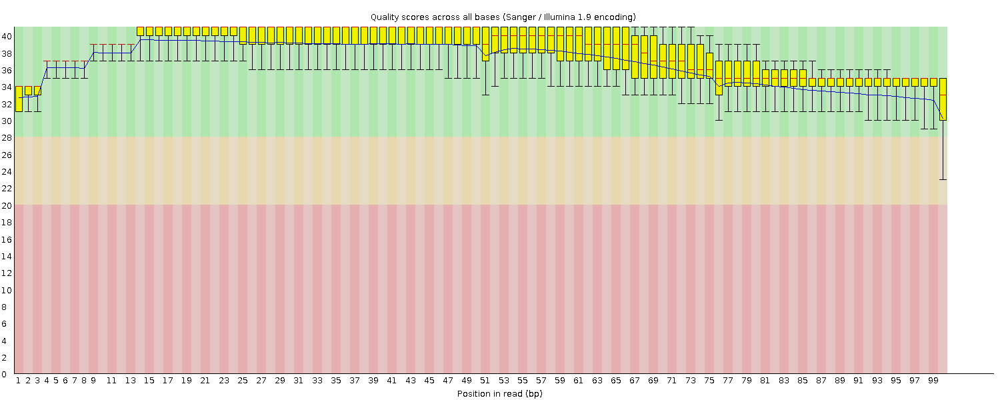
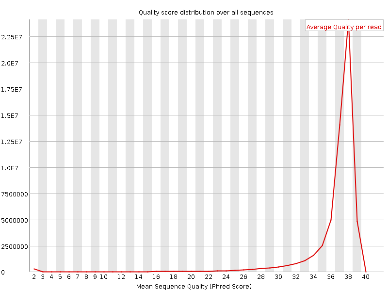
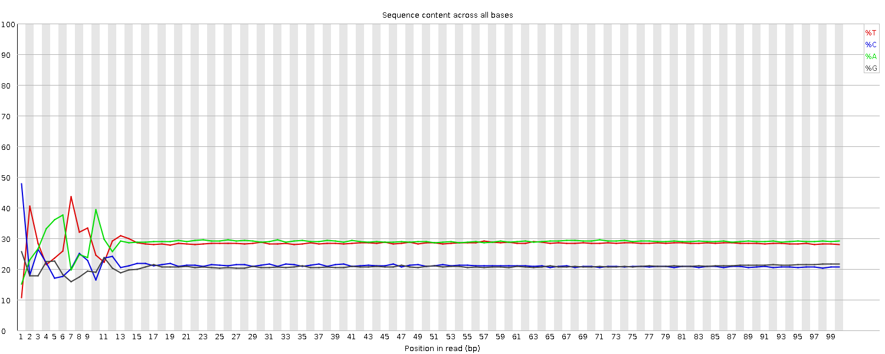
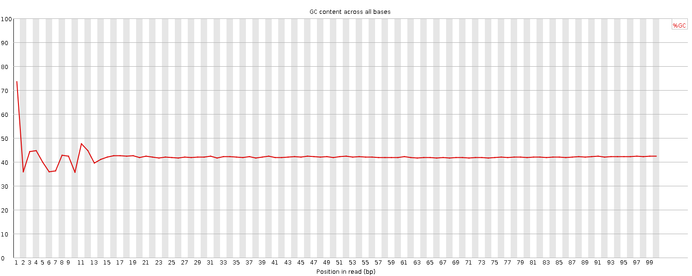
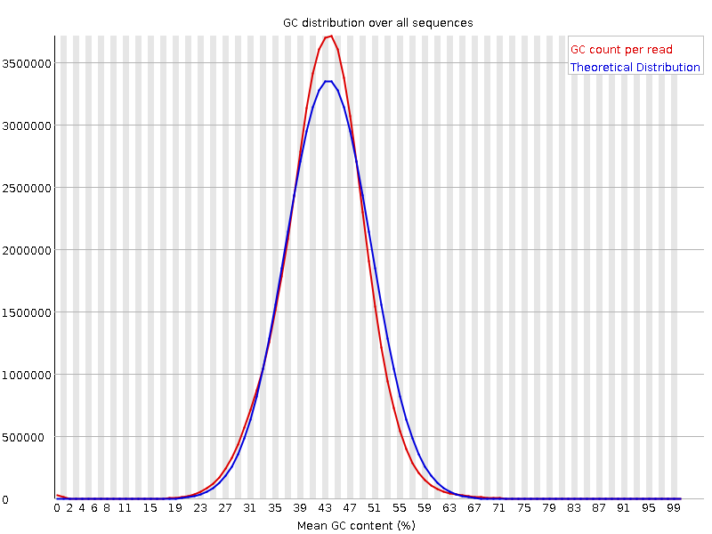
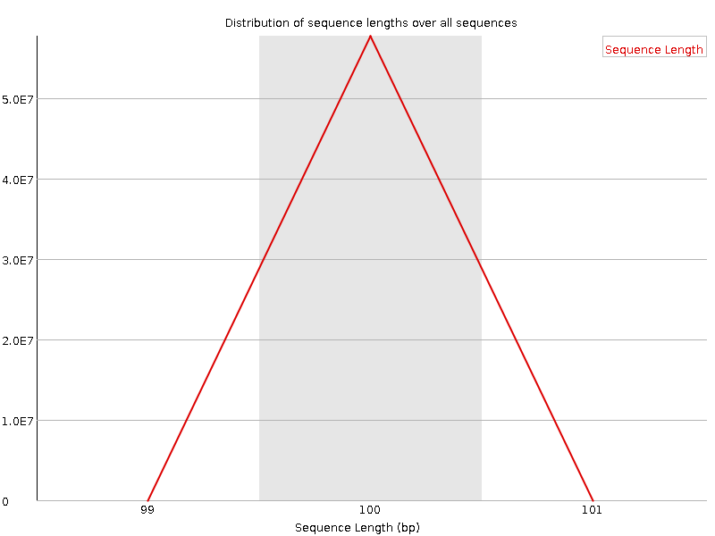
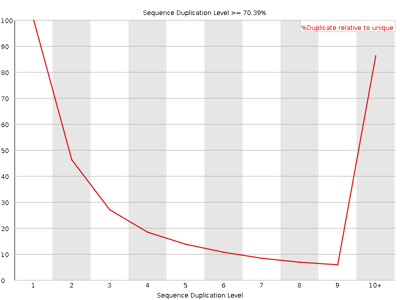
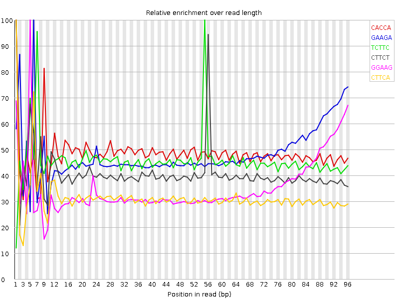

![[OK]](Icons/tick.png) Basic Statistics
Basic Statistics
| Measure | Value |
|---|---|
| Filename | 899_D6_AGTCAACA_L002_concat.fastq |
| File type | Conventional base calls |
| Encoding | Sanger / Illumina 1.9 |
| Total Sequences | 57738966 |
| Filtered Sequences | 0 |
| Sequence length | 100 |
| %GC | 42 |
Per base sequence quality

Per sequence quality scores

![[FAIL]](Icons/error.png) Per base sequence content
Per base sequence content

Per base GC content

Per sequence GC content

Per base N content

Sequence Length Distribution

Sequence Duplication Levels

![[WARN]](Icons/warning.png) Overrepresented sequences
Overrepresented sequences
| Sequence | Count | Percentage | Possible Source |
|---|---|---|---|
| GATCGGAAGAGCACACGTCTGAACTCCAGTCACAGTCAACAATCTCGTAT | 165665 | 0.2869206213356852 | TruSeq Adapter, Index 8 (97% over 36bp) |
Kmer Content

| Sequence | Count | Obs/Exp Overall | Obs/Exp Max | Max Obs/Exp Position |
|---|---|---|---|---|
| CACCA | 11920600 | 2.5715995 | 5.319522 | 1 |
| GAAGA | 14387580 | 2.427898 | 5.0165625 | 6 |
| TCTTC | 13742415 | 2.307292 | 5.03454 | 55 |
| CTTCT | 12738155 | 2.138681 | 5.241214 | 1 |
| GGAAG | 8924665 | 2.0947344 | 5.927693 | 5 |
| CTTCA | 12534400 | 2.0688882 | 6.572386 | 1 |
| CTTTG | 10471010 | 1.8081676 | 6.619342 | 1 |
| CTTGA | 10591225 | 1.7980024 | 6.4666624 | 1 |
| CTCCA | 8160245 | 1.7906653 | 8.004347 | 1 |
| CTGCT | 7730960 | 1.7748485 | 5.6605477 | 59 |
| CAAAA | 15032720 | 1.7732718 | 5.033786 | 1 |
| CTTCC | 7857630 | 1.753916 | 5.5590625 | 1 |
| CTTGG | 7246660 | 1.7111036 | 6.9413176 | 1 |
| GTTTG | 9118005 | 1.6194239 | 5.4487634 | 1 |
| CTTTT | 12592015 | 1.5902193 | 5.4251614 | 1 |
| GCTTG | 6682260 | 1.5778358 | 5.5613403 | 61 |
| CTCCT | 6613340 | 1.4761758 | 5.9987183 | 1 |
| CTCAA | 8628060 | 1.4000406 | 5.91025 | 1 |
| GAGCA | 5978840 | 1.3644052 | 6.2014904 | 9 |
| TCCAG | 5850930 | 1.3205253 | 5.2686214 | 25 |
| CTGGA | 5583720 | 1.2961524 | 5.4946094 | 1 |
| CACAC | 5903105 | 1.2734612 | 5.2925034 | 12 |
| AGAGC | 5354315 | 1.221885 | 6.038034 | 8 |
| TCTGC | 5279400 | 1.2120272 | 5.105092 | 58 |
| AGCAC | 5246215 | 1.1640239 | 5.7645097 | 10 |
| CTCAG | 4835645 | 1.0913806 | 5.1623487 | 1 |
| GATCG | 4593080 | 1.0661945 | 5.5393934 | 1 |
| GCACA | 4708915 | 1.0448084 | 5.2575746 | 11 |
| ATCGG | 4414905 | 1.0248346 | 5.4510474 | 2 |
| CGGAA | 4479415 | 1.0222279 | 5.2845917 | 4 |
| TCGGA | 4332845 | 1.005786 | 5.4695773 | 3 |
| GTCTG | 3794655 | 0.89600563 | 5.0366564 | 17 |
| CTCGG | 2760215 | 0.866481 | 5.6434 | 1 |
| CCGTC | 2692890 | 0.82190984 | 5.9616985 | 52 |
| TGCCG | 2377860 | 0.7464529 | 6.1020193 | 50 |
| GCCGT | 2194315 | 0.68883497 | 5.9591603 | 51 |